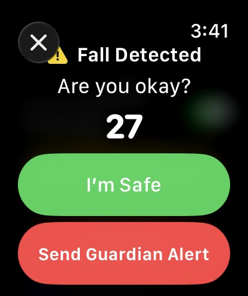
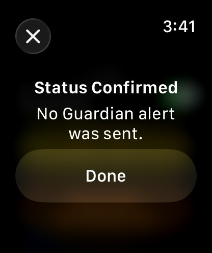
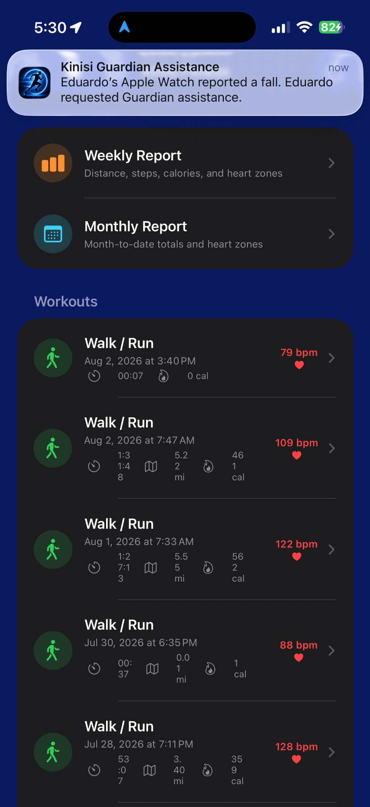
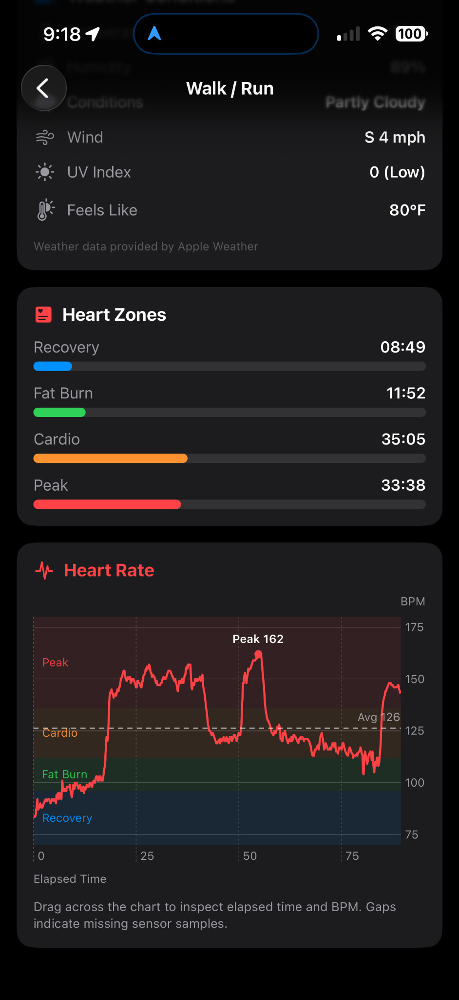

Live workout awareness
Trusted contacts see current workout status and key wellness information.
FITNESS & GUARDIAN SAFETY
Track every mile, understand every heartbeat, share your workout with Guardian, and respond when Apple Watch reports a fall.


KINISI GUARDIAN
Invite trusted family and friends to follow a workout in real time. Guardian can share live location, heart rate, pace, steps, battery status, weather, and workout progress while the athlete stays focused on the road ahead.
Trusted contacts see current workout status and key wellness information.
View the current position, street location, and open the route directly in Maps.
Send a Guardian Alert with workout and location context to enabled trusted contacts.
NEW IN KINISI 2.0
Kinisi uses Apple’s official Apple Watch Fall Detection API to check whether you are safe and, when needed, send a Guardian assistance request through the people you already trust.


Urgent Watch sounds and haptics accompany a 30-second safety countdown.
One tap ends the incident. No Guardian assistance request is sent.
Tap Send Guardian Alert, or allow the countdown to expire, to begin the Guardian response.
GUARDIAN ASSISTANCE
When an enabled Guardian contact is available, Kinisi sends a clear assistance notification stating that Apple Watch reported a fall. If the paired iPhone is temporarily unreachable, the incident can be queued for delivery when connectivity returns.

Kinisi Fall Detection supports Guardian assistance. It does not replace Apple Emergency SOS, emergency services, or professional medical care. Fall Detection availability depends on a supported Apple Watch, system permission, and compatible software.
BUILT FOR THE FULL WORKOUT

See the path, distance, duration, pace, calories, steps, heart rate, and weather from an actual workout.

Receive an unmistakable mile-complete screen with split pace and haptic feedback.

Continue measuring after the workout ends to understand how quickly heart rate settles.

Request assistance from the people already chosen and enabled as trusted contacts.

Start Walk/Run, Indoor Stepper, Indoor Bicycle, Indoor Rower, or Sit-ups from the wrist.
REAL RESULTS. REAL SCREENS.
Kinisi turns workout data into a clear, readable summary. Review interactive heart-rate graphs, heart zones, GPS routes, recovery, steps, weather conditions, and the details that help the next workout feel smarter.

KINISI FITNESS
Workout tracking for iPhone and Apple Watch, with Guardian live monitoring and Fall Detection response built in.